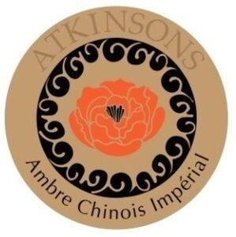

Trade Mark Journal No.2025/021 23 May 2025
WO0000001842844 (3,4)
Office of origin: Italy
Date of International Registration:21 November 2024
Date of designation in the UK:
21 November 2024

The mark contains the colours gold, black, brown and orange.
International priority date claimed: 22 May 2024
(Italy)
(302024000083287)
- Class 3
- Perfume; liquid perfumes; solid perfumes; Cologne; lavender water; perfume water; toilet water; antiperspirants for personal use; body deodorants [perfumery]; aromatics for perfumes; non-medicated body soaks; baths (cosmetic preparations for -); bath pearls; bath gel (non-medicated); scented bathing salts; bubble bath; douching preparations for personal sanitary or deodorant purposes [toiletries]; bath oils for cosmetic purposes; skin conditioners; lip balms [non-medicated]; skincare cosmetics; body creams for cosmetic purposes; face creams for cosmetic use; perfumed creams; micellar water; skin cleansers [cosmetic]; make-up removing preparations; body emulsions; facial emulsions [cosmetic]; cleansing milk; cosmetic masks; mousses [cosmetics]; cosmetic kits; cotton sticks for cosmetic purposes; cotton wool for cosmetic purposes; cosmetic oils for the epidermis; essential oils; scented oils; massage oils, not medicated; ethereal essences; pre-moistened cosmetic wipes; perfumed tissues; soaps; soaps in liquid form; perfumed soaps; body sprays; body talcum powder; beauty tonics for application to the face; sun blocking preparations [cosmetics]; cosmetic sunscreen preparations; make-up preparations for the face and body; make-up preparations; nail care products (cosmetics); nail polish; dentifrices; mouthwashes, not for medical purposes; shampoo; hair care lotions; cosmetics for the care and beautification of the hair; cosmetics for animals; shampoos for pets [non-medicated grooming preparations]; depilatory preparations; transfers (decorative -) for cosmetic purposes; massage candles for cosmetic purposes; cosmetics for children; body glitter; air fragrance reed diffusers; incense; fragrance refills for non-electric room fragrance dispensers; potpourris [fragrances]; air fragrancing preparations; room scenting sprays; shaving preparations; shaving mousse; shaving gel; shaving balm; shaving foam; shaving soap; shaving sprays; beard care preparations; shaving sets, comprised of shaving cream and aftershave; aftershave preparations; aftershave balms; moustache wax; beard dyes.
- Class 4
- Candles; perfumed candles; beeswax.
EUROITALIA S.R.L.
Representative: Dragotti & Associati S.r.l., Via Nino Bixio 7, I-20129 Milano (MI), ITALY